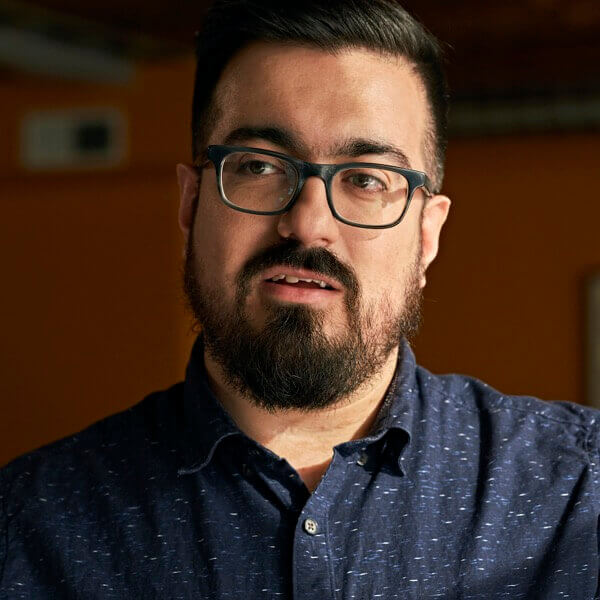
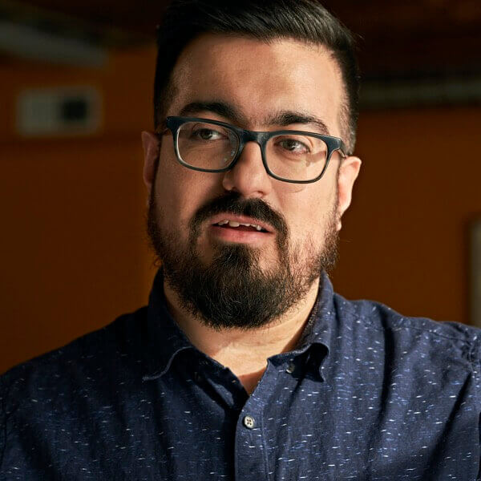

Bio in different formats
Headshots
 

Small Format
Ali Karbassi is the Founder and CEO of We All Code, a nonprofit organization dedicated to sparking curiosity in coding among kids aged 7 to 17.
Medium Format
Ali Karbassi is the Founder and CEO of We All Code. We All Code is a 501(c)3 nonprofit organization dedicated to sparking curiosity in coding among kids aged 7 to 17, with a particular focus on girls, students of color, and low-income students. Our mission is to introduce a diverse group of children to the fun of coding by providing free educational resources and hands-on classes. We envision a world where all children have an equal opportunity to ignite their curiosity through coding.
Large Format
Ali Karbassi is the Founder and CEO of We All Code. We All Code is a 501(c)3 nonprofit organization dedicated to sparking curiosity in coding among kids aged 7 to 17, with a particular focus on girls, students of color, and low-income students. Our mission is to introduce a diverse group of children to the fun of coding by providing free educational resources and hands-on classes. We envision a world where all children have an equal opportunity to ignite their curiosity through coding.
Ali founded We All Code in 2013 after 10 years in the corporate sector, working in the advertising and tech industries, as well as a startup focused on the “Internet of Things.”
Throughout his career, he noticed how few women and persons of color worked professionally in his field. He founded We All Code, in part, to spark an interest in programming skills in minorities, girls, and students from low-income families. We All Code has since taught over 2,000 students across Greater Chicago and engaged over 300 volunteer mentors, many of whom work in technology-related fields.
Ali is also an adjunct professor at IIT Institute of Design—the New Bauhaus—a graduate school teaching systemic, human-centered design.
Additionally, Ali runs the monthly sold-out public speaking event Ignite Talks Chicago, where 10 speakers have 5 minutes to share their passions with the audience, while slides auto-advance behind them every 15 seconds.